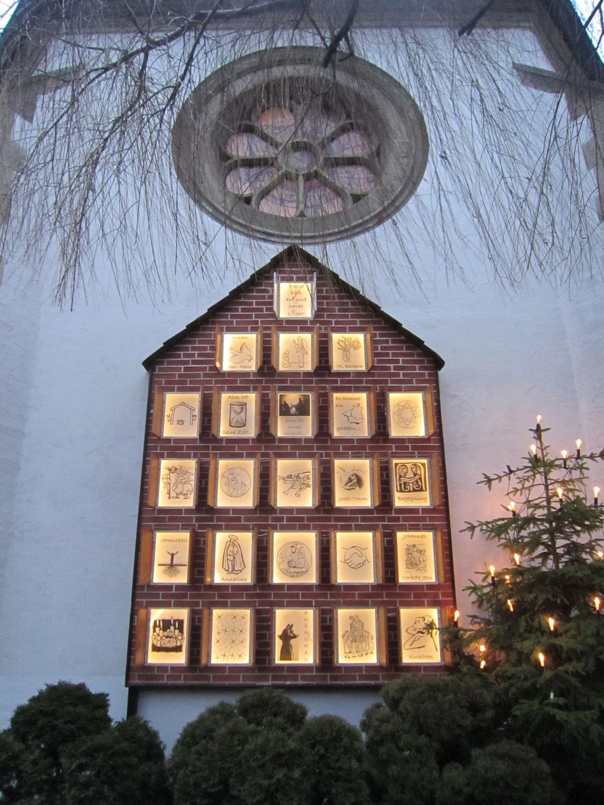
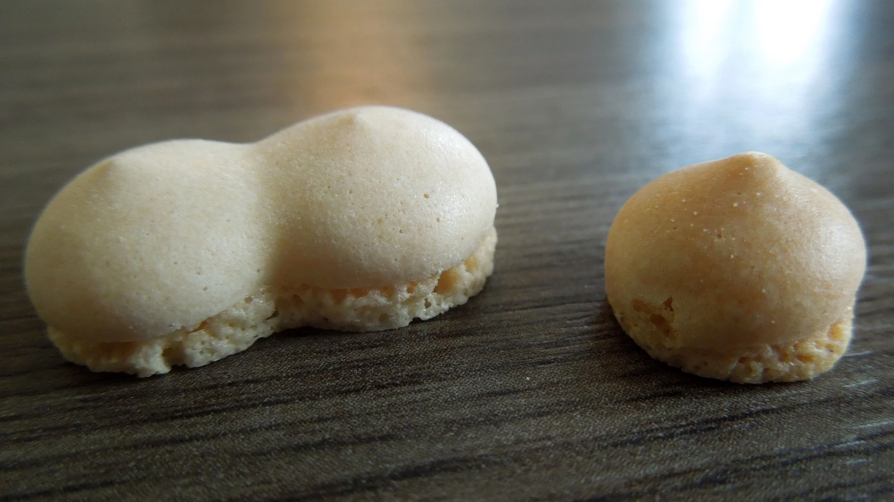
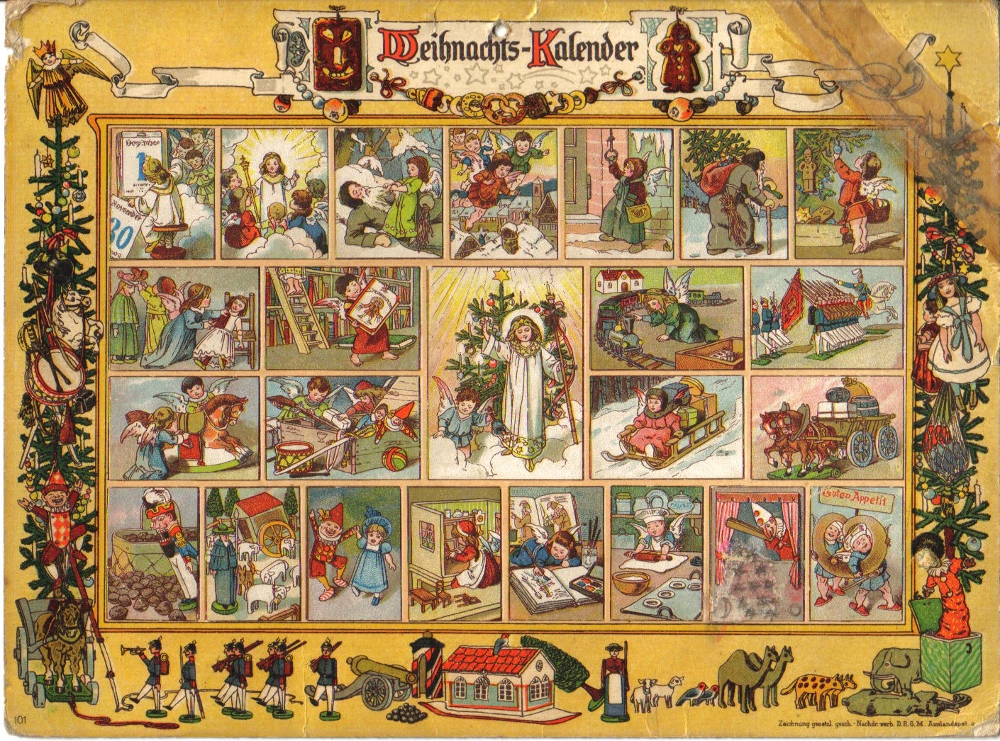

아직 펼치지 않은 카드성탄을 기다리는 날들 · 1대림절 달력스물네 개의 창, 오늘은 어느 창이 열릴까요?창문이 24개야. 오늘은 몇 번째 창이 열릴까?
19세기 말 ~ 1915년독일 마울브론 · 뮌헨
대림절 달력
19세기 말 독일의 한 목사관에서, 어머니가 판지에 작은 과자 24개를 붙여 아들에게 주었어요. 그 아들 게르하르트 랑은 자라서, 날마다 그림을 한 장씩 오려 붙이는 달력을 펴냈어요. 그림을 다 붙인 그 달력의 칸을 하나씩 눌러 보세요.
옛날 독일의 한 아이는 엄마가 만든 과자 달력에서 날마다 과자를 하나씩 떼어 먹었대. 그 아이가 커서 그림 달력을 만들었어! 칸을 하나씩 눌러 볼까?
검수 전 시안이에요(기준서 1판). 장면에는 기록에 있는 것만 옮겼고, 자료마다 다른 해는 ‘기록마다 다른 점’에 모았어요. 상상은 ‘눈 감고 상상해 보기’에만 썼어요.
시안 확인용카드 단계 미리 보기
1
목사관의 과자 달력
19세기 독일의 아이들은 성탄까지 남은 날을 여러 가지로 셌어요. 문에 분필로 24줄을 긋고 날마다 하나씩 지우는 집도 있었고, 착한 일을 할 때마다 구유에 지푸라기를 하나씩 넣는 집도 있었어요.
마울브론의 목사 부인 셀마 랑은 판지에 ‘비벨레’라는 작은 과자 24개를 붙여 아들 게르하르트에게 주었어요. 아이는 날마다 하나씩 떼어 먹으며 성탄을 기다렸어요.

엄마가 판지에 작은 과자를 24개 붙여 줬대. 하루에 하나씩 떼어 먹는 거야!
물어보기하루에 과자 하나씩, 너라면 끝까지 기다릴 수 있을까?
2
날마다 한 장씩 붙인 그림
게르하르트 랑은 자라서 뮌헨의 출판인이 되었어요. 1908년, 여러 번 시도한 끝에 「아기 예수의 나라에서」라는 달력을 펴냈어요. 그림은 화가 리하르트 에른스트 케플러가 그리고, 칸마다 들어갈 짧은 시는 랑이 직접 썼어요.
판지에는 시가 적힌 칸 24개가 있었어요. 아이는 날마다 그날의 그림을 오려, 뒷면에 물을 묻혀 제자리에 붙였어요. 아래는 1915년에 다시 찍은 달력으로, 그림을 다 붙인 모습이에요.
그림을 다 붙인 달력이에요. 칸 속 작은 것들을 하나씩 눌러 보세요.

게르하르트 랑의 달력 「아기 예수의 나라에서」, 1915년에 다시 찍은 것(그림을 다 붙인 모습) · 그림: 리하르트 에른스트 케플러 · 퍼블릭 도메인 · 위키미디어 공용
그림 위의 숫자나 아래 번호를 눌러 보세요.
다 찾았어요. 이 달력의 빈칸은 이렇게 하루하루 그림으로 채워졌어요.
24칸이 다 차는 날이 성탄 전야였어요. 기다림이 눈에 보이는 그림으로 쌓였어요.
우리 집 대림절 달력 칸에는 무엇을 넣을까요?
날마다 그림을 하나씩 오려서 붙이는 달력이야. 칸을 하나씩 눌러 볼래?
물어보기오늘 그림을 하나 붙인다면, 어떤 그림이면 좋겠어?
눈 감고 상상해 보기
12월의 아침, 창밖은 아직 어둑해요. 가위가 사각사각, 오늘의 그림이 종이에서 떨어져요. 뒷면에 물을 살짝 묻혀 빈칸에 꾹 눌러요. 빈칸이 하나 줄었어요. 성탄이 꼭 그만큼 가까워졌어요.
눈을 감아 봐. 가위로 사각사각, 오늘 그림을 오려. 뒤에 물을 콕 묻혀서 꾹! 성탄이 하루 더 가까워졌어.
나의 자리
나는 지금 무엇을 기다리고 있나요? 그 기다림을 하루씩 센다면, 오늘은 어떤 창을 열고 싶나요?
성탄절까지 며칠 남았는지 손가락으로 세어 볼까?
마음에 닿는 한 줄을 고르거나 직접 써 보세요. 한 줄을 남기면 이 자리의 도장이 찍혀요. 이 기기에만 저장돼요.
더 깊이
궁금한 칸만 펼쳐 읽어도 괜찮아요.
알고 보면
게르하르트 랑(1881~1974) 마울브론의 목사 집안에서 자라 뮌헨에서 책과 달력을 펴냈어요. 어머니 셀마 랑(1852~1917)은 출판인의 딸이었어요.
비벨레 독일 남서부 호엔로에 지방의 작은 과자예요. 장면의 사진은 오늘 만든 비벨레예요.
그 뒤의 달력 랑은 작은 문을 여는 달력, 촛불로 밝히는 집 모양 달력도 펴냈어요. 독일 성탄 박물관은 랑이 1926년에 초콜릿을 넣은 달력을, 1930년에 앞을 보지 못하는 사람을 위한 달력을 처음 냈다고 소개해요.
더 옛날의 셈법 1851년에 나온 엘리제 아버디크의 어린이 책에는, 저녁마다 벽에 그림을 한 장씩 더 붙여 24장이 되는 집이 나와요.
기록마다 다른 점
가장 오래된 인쇄 달력 「아기 예수의 나라에서」는 흔히 첫 인쇄 대림절 달력으로 꼽혀 왔어요. 하지만 독일 성탄 박물관은 1900년 뮌헨의 카를 슈트라우프 이름으로 실용신안 보호를 받은 달력을 가장 오래된 인쇄 달력으로 들어요. 1900년은 보호를 받은 해이고, 언제 나왔는지는 따로 적지 않았어요. 1902년 함부르크의 한 개신교 서점이 펴낸 ‘아이들을 위한 성탄 시계’를 첫 인쇄 달력으로 꼽는 자료도 있어요.
랑의 달력은 언제? 1908년이라고 적은 자료(신문 기사, 슈베비셰 차이퉁)가 많고, 독일 성탄 박물관은 ‘1904/1908년부터’라고 적어요. 1903년이라고 적은 자료도 있어요.
이 그림 위키미디어 공용의 이 달력은 1915년에 다시 찍은 것이에요. 처음 펴낸 판과 그림이 똑같은지는 확인하지 못했어요.
오늘의 대림절 달력
독일 뮌스터 한도르프의 성 페트로닐라 성당은 동쪽 바깥벽에 커다란 대림절 달력을 걸어요(2017년 12월 사진). 벽돌집 모양 판의 창 24개마다 그림과 짧은 글이 있어요.
맨 위 창에는 독일어로 ‘일어나 빛이 되어라’라고 적혀 있어요. 이사야 60장 1절의 첫머리예요.
달력 속 다섯 곳 금박
달력 속 다섯 곳을 모두 찾아 읽으면 카드에 금박이 입혀져요.
달력 속 다섯 곳을 모두 찾아 읽기
우리 집 달력 칸 채색
둘 가운데 하나만 해도 카드가 채색돼요.
우리 집 달력 칸에 무엇을 넣을지 고르기
아이와 함께 ‘영화처럼 보기’를 끝까지 보기
근거 보기 (7)
- 독일 성탄 박물관(로텐부르크): 대림절 달력 — 분필 줄·지푸라기·1851년 어린이 책, 1900년 슈트라우프 실용신안, 1902년 성탄 시계, 랑 1904/1908, 1926 초콜릿, 1930 점자 달력
- 슈베비셰 차이퉁, 「문 23: 게르하르트 랑과 대림절 달력」 — 셀마 랑의 비벨레 판지, 1908년 「아기 예수의 나라에서」, 케플러의 그림과 랑의 시
- 레겐스부르크 대학 전자 문고: 옛 신문 기사 「대림절 달력의 오랜 풍습」 — 1908년, 그림을 오려 물을 묻혀 붙이기, 23일의 천사와 24일의 아기 예수, 분필 24줄
- 위키미디어 공용: 달력 사진 정보 — 1915년에 다시 찍은 판, 그림을 다 붙인 모습
- 위키미디어 공용: 한도르프 성당 바깥벽 대림절 달력 사진 정보 — 성 페트로닐라 성당 동쪽 바깥벽, 2017년 12월
- 역사 방앗간 상수시 박물관(museum-digital): D.R.P. 표지판 설명 — 1891년 독일 특허청이 D.R.G.M.(실용신안)을 도입, ‘작은 특허’라 불림
- 독일어 위키백과: Adventskalender — 길잡이로만(1902년 함부르크 성탄 시계, 1903년 설; 2007년 전시 도록과 스위스 국립박물관 글을 인용)
그림·사진·소리 출처
‘처음 만나는 기독교 문화’의 깊은 카드예요. 실제 인물의 사진은 쓰지 않았어요. 카드 단계와 남긴 글은 이 기기에만 저장돼요.